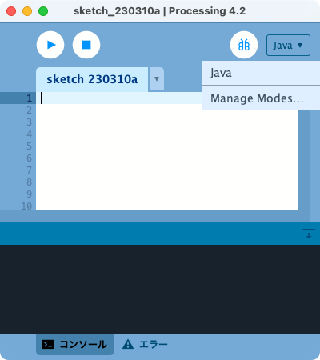
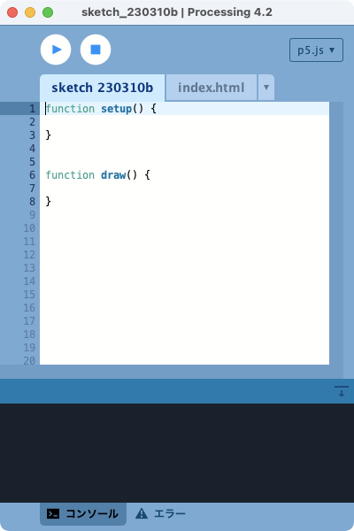

コードを書く・動かす
プログラムを作成する道具として、Processingアプリのp5.jsモードを使って、JavaScriptのコードを書き、実行します。Processingアプリはプログラムを編集・実行する「プログラミング環境」で、そのp5.jsモードはp5.jsライブラリを使うのに特化した機能をもっています。インタラクティブなモーショングラフィックスの処理をJavaScriptで記述し、Webブラウザ上で直ちに実行することができます。
Processingとp5.jsモードのインストール

Processingは、 Processing.orgのサイトからインストールできます。Processingは元々Java言語をベースにしたプログラミング環境なので、デフォルトではJava言語でプログラムを書くモードになっています。インストールしたProcessingアプリを起動すると、ウィンドウの右上隅にjavaの文字と▼が表示されています。▼をクリックするとプルダウンメニューが現れ、そこのManage Modesメニューを選択します。
表示されるダイアログウィンドウからp5.jsを選択し、Installボタンを押すと、インストールが始まり、モードのメニューにp5.js が追加されます。
p5.jsモードのスケッチ

Processingウィンドウの右上隅の下向き三角で、p5.jsを選択すると、図のような画面になります。
sketch_で始まるタブはJavaScriptのプログラムで、起動直後(新規作成時)は空のsetup()関数とdraw()関数が定義されています。
Processing(p5.js)では、このプログラムをスケッチと呼びます。
関数とは、 いくつかの命令(プログラムの処理)をまとめて(グループにして)、名前をつけたものです。functionは、JavaScriptで関数を定義するキーワードで、functionに続いて、関数の名前を書き、その後ろに( )、その後ろに { と } で囲んで、実行したい命令を書きます。( )の中には、命令を実行するのに必要なデータ(これを引数と呼ぶ)を指定しますが、setup関数とdraw関数は引数がありません。
ページのロード時に1回だけ実行したい処理はsetup()関数内に書きます。また、draw()関数の中には、繰返し実行したい処理を書きます。draw()関数は、プログラムを停止しない限り、ずっと一定の間隔で何度も実行されます。draw()関数が実行される間隔をフレームレート(1秒間の描画回数)といいます。この回数はディスプレイのリフレッシュレート(1秒間に画面を書き換えられる回数)に従っており、ほとんどのコンピュータでは60に設定されています。
スケッチには、JavaScript言語の文法に従い、p5.jsに定義された命令(関数と呼ぶ)を使って、描画処理のプログラムを記述します。
p5.jsの関数はメニューの[Help][Reference]から仕様の一覧を参照できます。 次のURLからもリファレンスを参照できます。 https://p5js.org/reference/
index.html
index.htmlのタブは、スケッチをWebブラウザ上で実行するためのHTMLファイルで、[実行]ボタン(右向き三角)をクリックすると、Webブラウザが起動され、index.htmlファイルが表示されます。index.htmlには、次の２つの<script>タグが記述されており、 スケッチのプログラムがページ上で実行されます。<script language="javascript" type="text/javascript" src="libraries/p5.min.js"> </script> <script language="javascript" type="text/javascript" src="sketch_230310b.js"> </script>sketch_230310b.jsのようにsketch_で始まるファイル名は仮のjavascriptコードのファイル名です。 スケッチを保存する際に任意の名前をつけると、その名前のフォルダが作成され、その中に拡張子jsのファイル、index.html、librariesフォルダ(p5.min.jsファイルが入る）ができます。
Processingの[実行]ボタンを押すと、自動的にローカルコンピュータ上でWebサーバが動き、Webブラウザが起動されてindex.htmlを読み込みます。ブラウザのアドレスを見ると、ローカルサーバのIPアドレスhttp://127.0.0.1となっているのは、ローカルコンピュータ上のWebサーバを意味します。
スケッチが正しく動作しない時は、WebブラウザのJavaScriptコンソールを開き、そこに表示されるエラーに関する情報を得て、修正します。